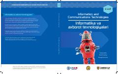

IV6-sinf o'quvchilari uchun mo'ljallangan zamonaviy axborot texnologiyalari va informatika darsligi.
Ushbu darslik 6-sinf o'quvchilari uchun mo'ljallangan bo'lib, Microsoft Office asoslari, animatsiya, vebsaytlar yaratish, elektron jadvallar va dasturlash ko'nikmalarini bosqichma-bosqich o'rgatadi. Kitob Cambridge University Press materiallari asosida O'zbekiston ta'lim talablariga moslashtirilib tayyorlangan.